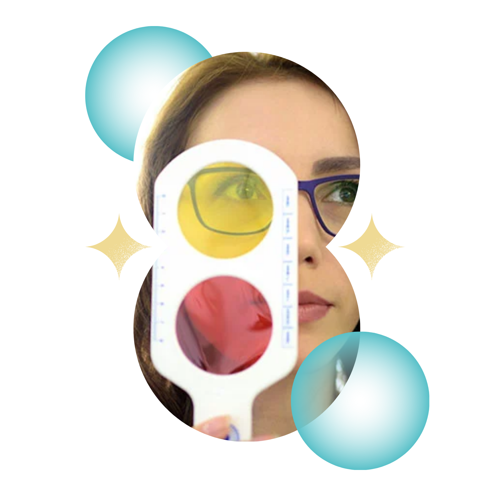
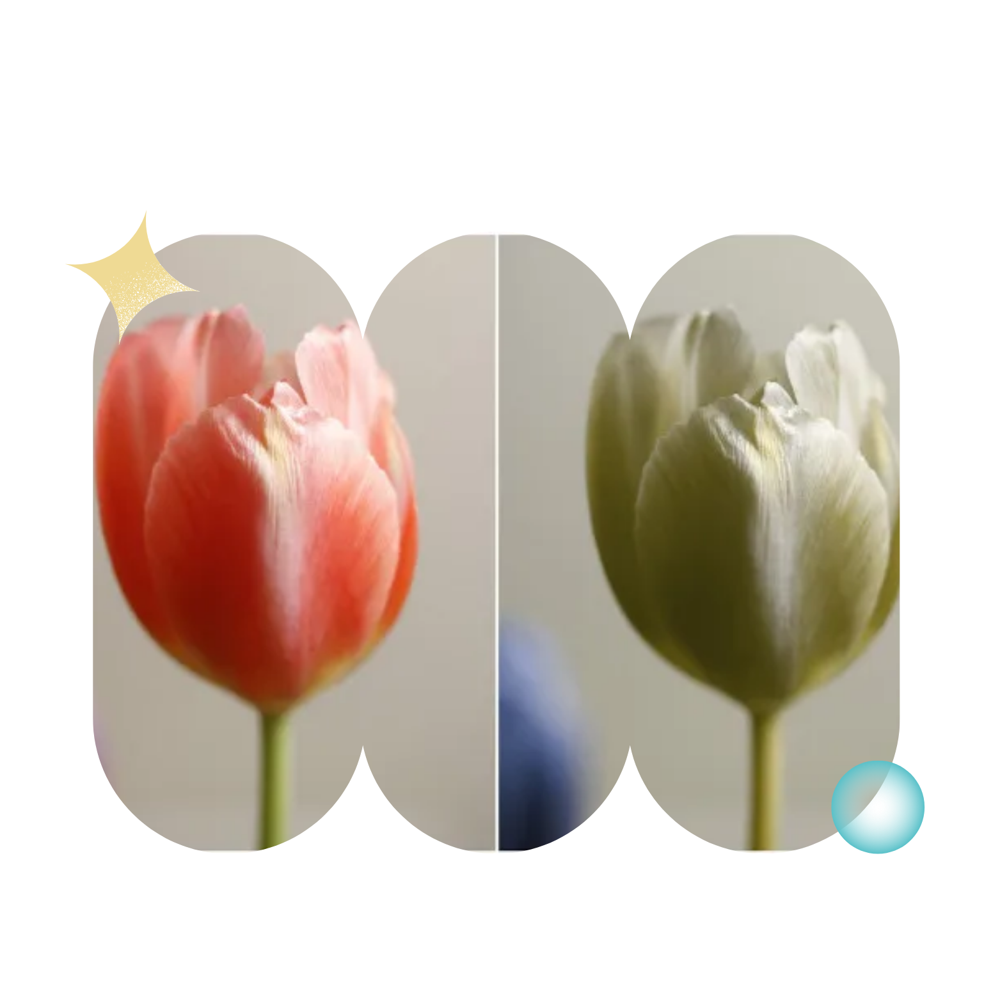

O que é Daltonismo?
O daltonismo, também conhecido como discromatopsia, é uma condição genética que afeta a percepção das cores. Pessoas com daltonismo podem ter dificuldade em distinguir certas cores, como vermelho e verde, azul e amarelo, ou todas as cores.
Embora não haja cura para o daltonismo, os afetados podem aprender a lidar com a condição e viver uma vida normal.

Alguns exemplos:
Acromatopsia
A acromatopsia é uma condição visual rara em que a pessoa não consegue perceber nenhuma cor, vendo apenas em tons de cinza.
Referências: Daltonismo - Dráuzio Varella